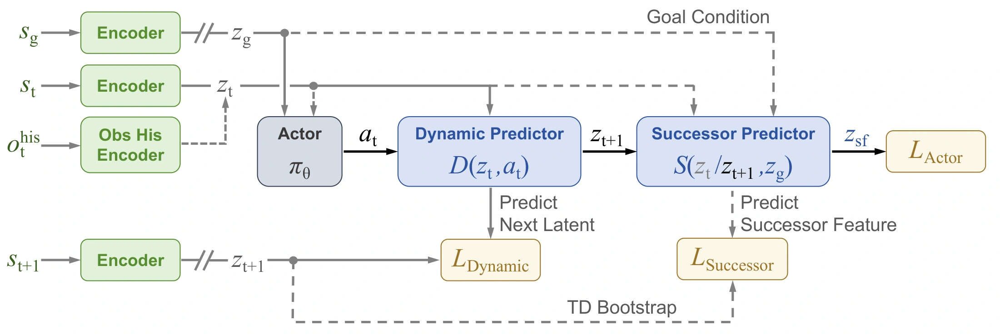

Global body-position error
219.5 mm
Global MPJPE on AMASS.
61.7% lower than BFM-Zero (world)
and 58.7% lower than SONIC.
World-anchored whole-body control on the Unitree G1.
BeJEPA learns a goal-conditioned behavior world model for humanoid control through unsupervised reinforcement learning from human motion priors and robot interaction. It represents whole-body posture, world position, and heading in a shared latent space. A Dynamic Predictor models immediate action consequences, while a Successor Predictor summarizes expected long-term behavior. Their composition guides policy learning without long imagined rollouts, and Dynamic further refines actions at inference time. BeJEPA improves world-coordinate motion tracking and enables a physical Unitree G1 to reach joint posture and world-pose goals, stand up from the ground, and return after disturbances and goal changes.


One physical prediction, one behavioral summary. Dynamic predicts the next state embedding under an action; Successor predicts discounted future embeddings under a goal-conditioned policy. Both train the shared encoder, and their composition trains the actor to choose actions by their long-term goal alignment. At inference, the same Dynamic Predictor supports model-predictive action refinement for more precise spatial and temporal tracking.
219.5 mm
Global MPJPE on AMASS.
61.7% lower than BFM-Zero (world)
and 58.7% lower than SONIC.
94.8 → 21.2 ms
Mean signed joint-tracking lag on AMASS.
BeJEPA → BeJEPA-MPC (Balanced),
using the same pretrained weights.
20-second motion tracking on the 29-actuator G1 in MuJoCo at 50 Hz. MPC results use the Balanced setting.